Proyecciones de Extremidad Inferior
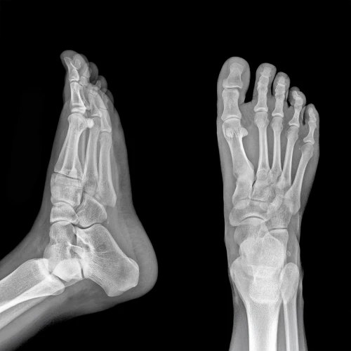
Pie AP o Dorsoplantar
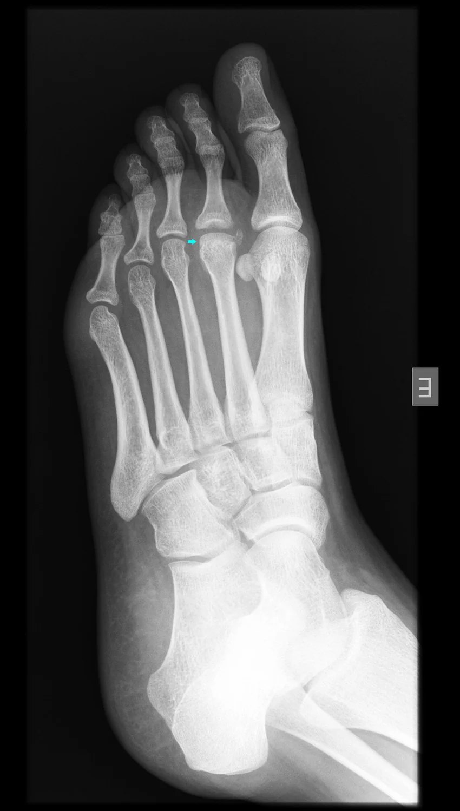
Pie AP Oblicuo
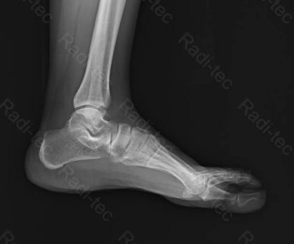
Pie Lateral
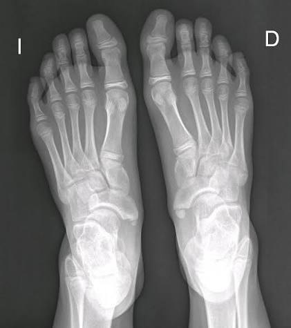
Pies AP y Lateral con Carga
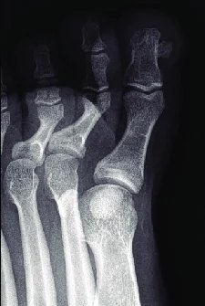
1er Ortejo (AP, Lateral y Oblicuo)
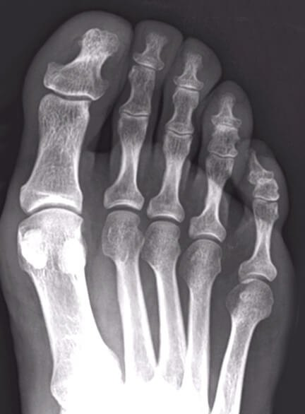
Ortejos del 2° al 5° (AP, Lateral y Oblicuo)
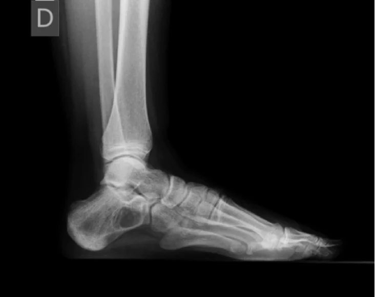
Calcáneo Lateral
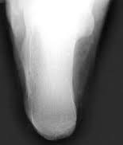
Calcáneo Axial
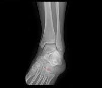
Tobillo AP
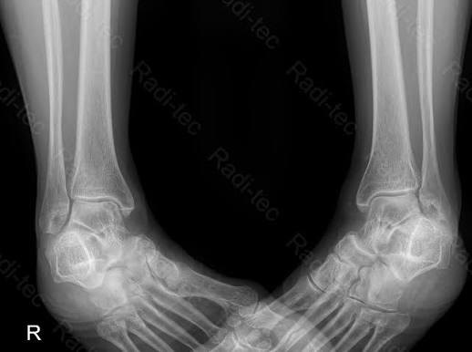
Tobillo Oblicuo Interno
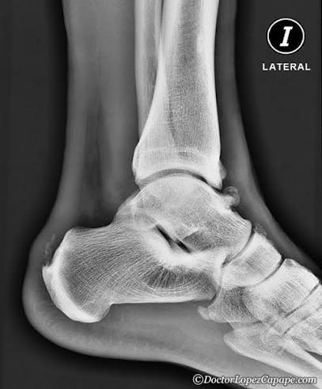
Tobillo Lateral
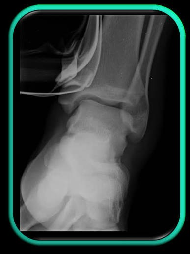
Tobillo Oblicuo Externo
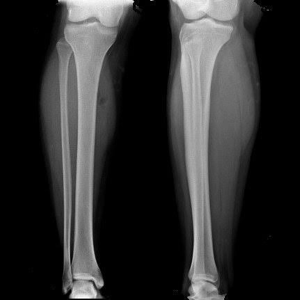
Pierna
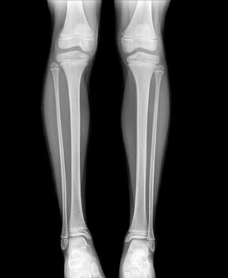
Pierna Oblicuas
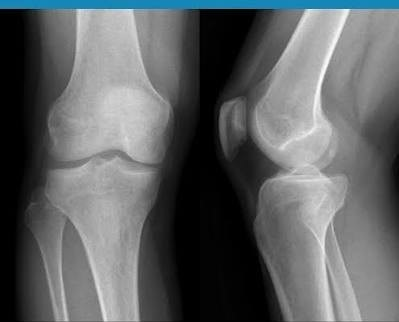
Rótula
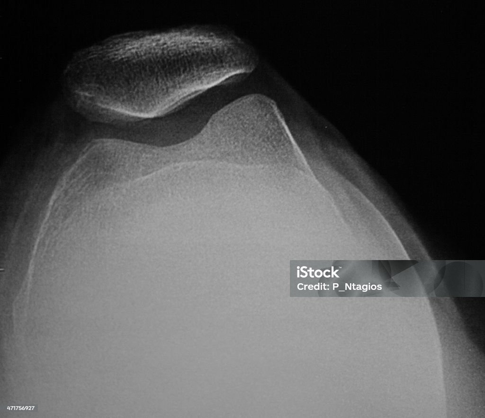
Axial de Rótula (Método de Merchant)
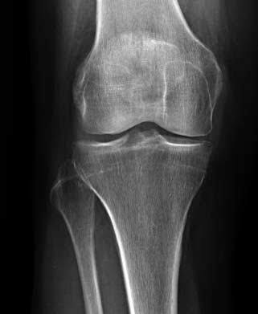
Rodilla AP
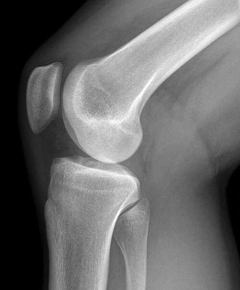
Rodilla Lateral
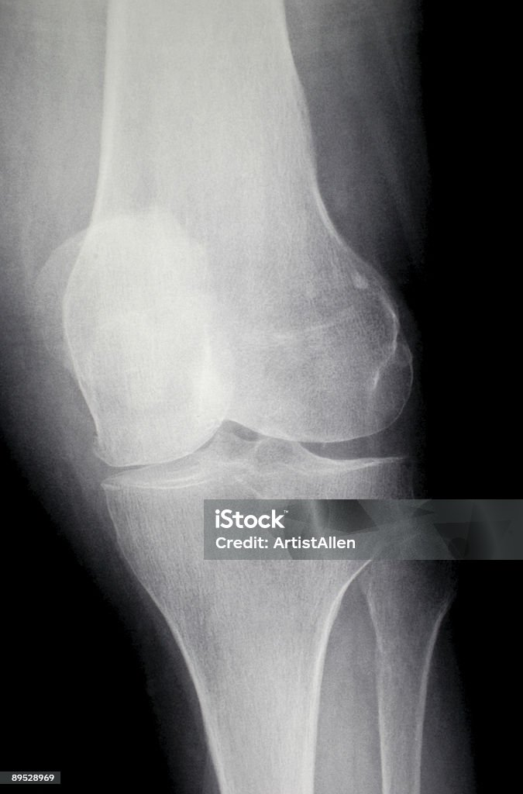
Rodilla Oblicua
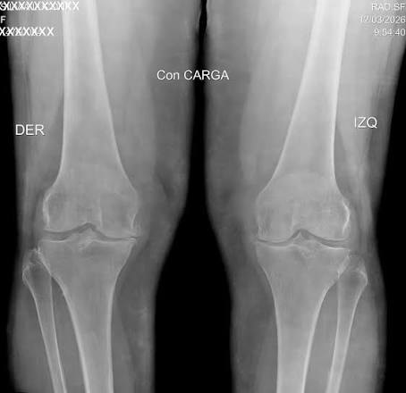
Rodilla AP con Carga
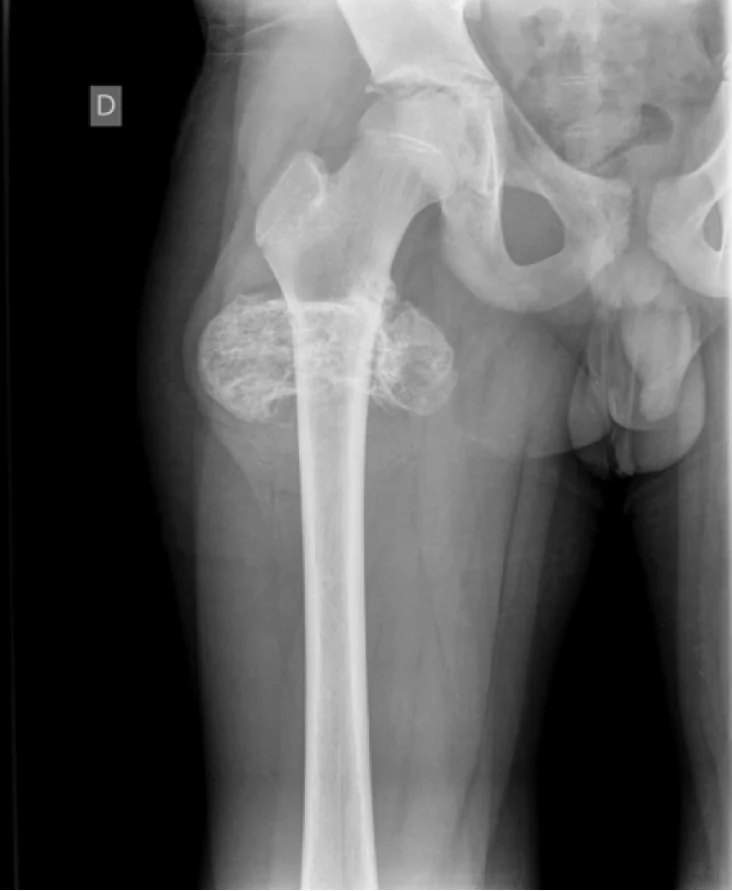
Fémur AP
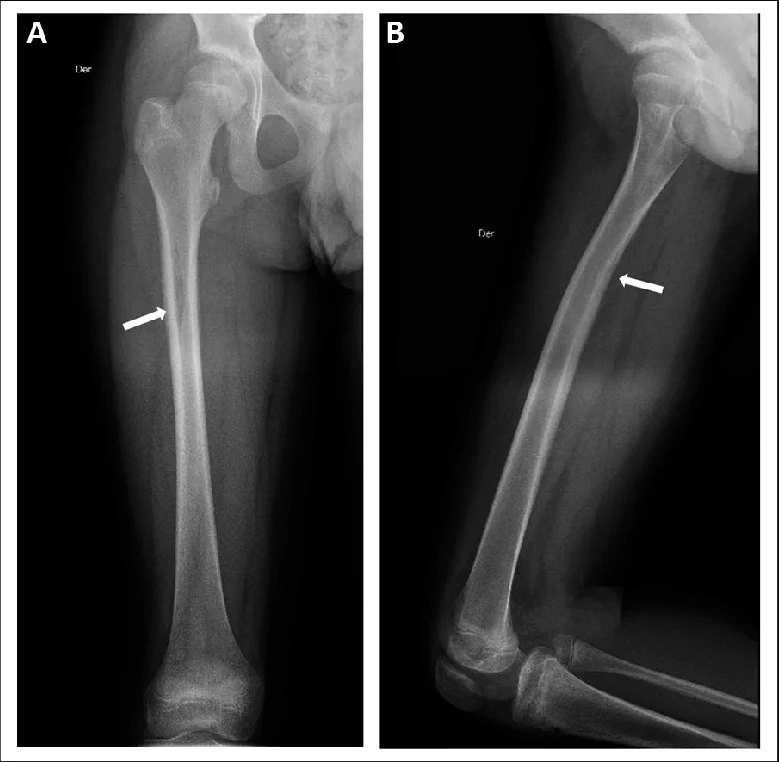
Fémur Lateral Proximal
Fémur Lateral Distal
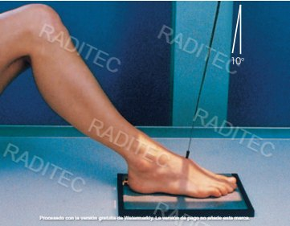
Posicionamiento PacientePie AP o Dorsoplantar
Calzado, calcetines gruesos, tobilleras metálicas, anillos de ortejos.
Descubrir pie y tobillo.
24 x 30 cm (Longitudinal) o Flat Panel. Folio fine.
100 cm.
Sin Bucky.
Angulado en 10° hacia craneal (perpendicular a los metatarsianos para abrir espacios intertarsianos).
Por el frente el eje longitudinal del pie; por el lado la base del 3° metatarsiano.
Paciente sentado (sedestación) o en decúbito dorsal sobre la mesa de rayos, flexionando la rodilla para apoyar toda la planta del pie plana sobre el chasis.
50 - 55 kV
3 - 5 mAs
- Sin moverse.
- Protección Tiroidea.
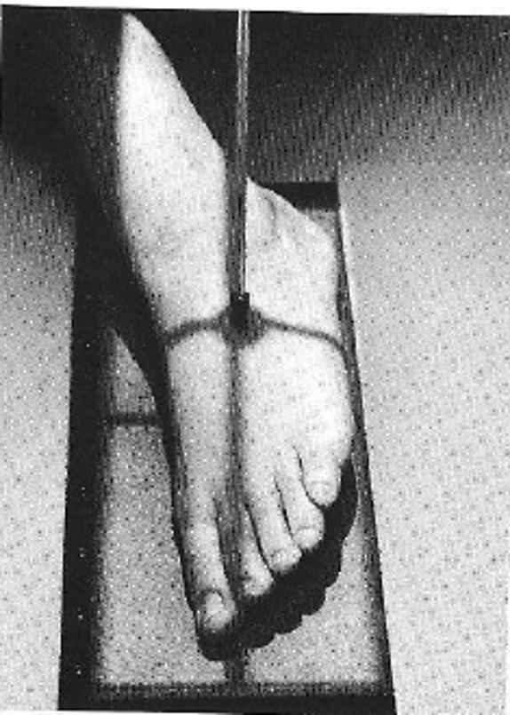
Posicionamiento PacientePie AP Oblicuo
Calzado, calcetines, tobilleras metálicas.
Descubrir pie y tobillo.
24 x 30 cm (Longitudinal) o Flat Panel. Folio fine.
100 cm.
Sin Bucky.
Angulado en 10° hacia craneal (o 0° perpendicular según técnica).
Por el frente el eje longitudinal del pie; por el lado la base del 3° metatarsiano.
Paciente sentado (sedestación) o en decúbito dorsal sobre la mesa apoyando la planta del pie sobre el chasis; desde esta posición, rotar medialmente el pie elevando unos 30° a 45° el borde externo (lateral) del pie apoyado con una cuña radiolúcida.
50 - 55 kV
3 - 5 mAs
- Sin moverse durante la exposición.
- Protección Tiroidea.
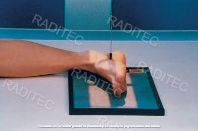
Posicionamiento PacientePie Lateral (Mediolateral)
Calzado, calcetines, tobilleras metálicas.
Descubrir pie y tobillo.
24 x 30 cm (Transversal) o Flat Panel. Folio fine.
100 cm.
Sin Bucky.
0° (Perpendicular al RI).
Por el frente y por el lado en la base de los metatarsianos (base del 1° metatarsiano / cuneiforme medial).
Paciente en decúbito lateral sobre la mesa de rayos, apoyando todo el pie lateralmente sobre el chasis (lado o borde externo) con dorsiflexión neutra del tobillo (90°).
55 - 62 kV
4 - 6 mAs
- Sin moverse durante el disparo.
- Protección Tiroidea.
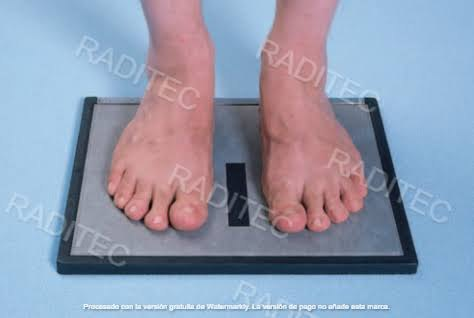
Posicionamiento PacientePies AP y Lateral con Carga (Con Apoyo)
Calzado, calcetines, tobilleras metálicas.
Descubrir ambos pies y tobillos.
24 x 30 cm o 30 x 40 cm (Longitudinal). Folio fine.
100 cm.
Sin Bucky.
• AP con carga: Angulado en 10° a 15° hacia craneal.
• Lateral con carga: 0° Horizontal perpendicular al chasis.
• AP: Punto medio entre ambos pies a nivel de la base del 3° metatarsiano.
• Lateral: Base del 1° metatarsiano / articulación tarsometatarsiana.
• AP con Carga: Paciente en bipedestación sobre la plataforma/mesa o en el suelo, apoyando ambos pies en su totalidad sobre el chasis con el peso distribuido equitativamente.
• Lateral con Carga: Paciente en bipedestación apoyando ambos pies en su totalidad sobre el aditamento de madera/acrílico, separados verticalmente por el chasis en medio de ambos pies.
52 - 58 kV (AP) / 58 - 65 kV (Lateral)
4 - 6 mAs (AP) / 5 - 8 mAs (Lateral)
- Sin moverse durante el disparo (evalúa pie plano, pie cavo, hallux valgus y arcos plantares bajo peso fisiológico).
- Protección Tiroidea.
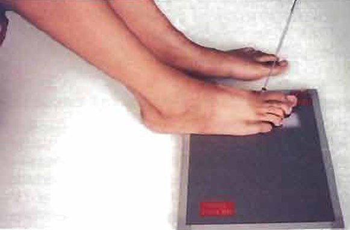
Posicionamiento Paciente1er Ortejo (AP, Lateral y Oblicuo)
Calzado, calcetines, anillos de ortejos.
Descubrir pie.
18 x 24 cm (Transversal dividido). Folio fine.
100 cm.
Sin Bucky.
0° (Perpendicular al RI; en AP puede angularse 10°-15° craneal si no se usa cuña).
Por el frente el eje longitudinal del 1° ortejo y por el lado la articulación metatarsofalángica (MTF) del 1° ortejo.
Paciente en decúbito dorsal o sentado sobre la mesa de rayos:
• AP: Planta del pie apoyada plana sobre el chasis (o sobre cuña de 15°).
• Lateral: Rotar el pie medialmente apoyando el borde interno del 1er ortejo sobre el chasis y separando los demás ortejos con gasa/banda.
• Oblicuo: Rotar medialmente el pie entre 30° y 45°.
45 - 50 kV
2 - 3.5 mAs
- Sin moverse durante la exposición.
- Protección Tiroidea.
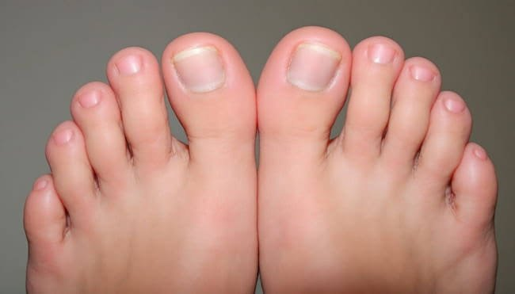
Posicionamiento PacienteOrtejos del 2° al 5° (AP, Lateral y Oblicuo)
Calzado, calcetines, anillos de ortejos.
Descubrir pie.
18 x 24 cm o 24 x 30 cm (Transversal dividido). Folio fine.
100 cm.
Sin Bucky.
0° Perpendicular (o 10°-15° craneal en AP para abrir articulaciones interfalángicas).
Por el frente y por el lado sobre el ortejo de interés, a nivel de la articulación metatarsofalángica (MTF).
Paciente sentado o en decúbito dorsal sobre la mesa:
• AP: Planta del pie apoyada plana sobre el receptor.
• Oblicuo: Rotación medial o lateral de 30° a 45° separando ortejos.
• Lateral: Ortejo apoyado lateralmente sobre el chasis separando los dedos adyacentes con cinta o gasa.
44 - 48 kV
2 - 3 mAs
- Sin moverse durante el disparo.
- Protección Tiroidea.
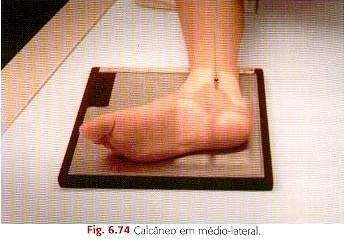
Posicionamiento PacienteCalcáneo Lateral
Calzado, calcetines, tobilleras metálicas.
Descubrir tobillo y talón.
18 x 24 cm (Transversal). Folio fine.
100 cm.
Sin Bucky.
0° (Perpendicular al RI).
Por el frente y por el lado directamente en el centro del hueso calcáneo (2,5 cm inferior al maléolo medial).
Paciente en decúbito lateral sobre la mesa de rayos, apoyando el lado externo del talón sobre el chasis (tobillo en dorsiflexión de 90°).
55 - 62 kV
4 - 6 mAs
- Sin moverse durante el disparo (evalúa espolón calcáneo, fracturas de calcáneo y ángulo de Böhler).
- Protección Tiroidea.
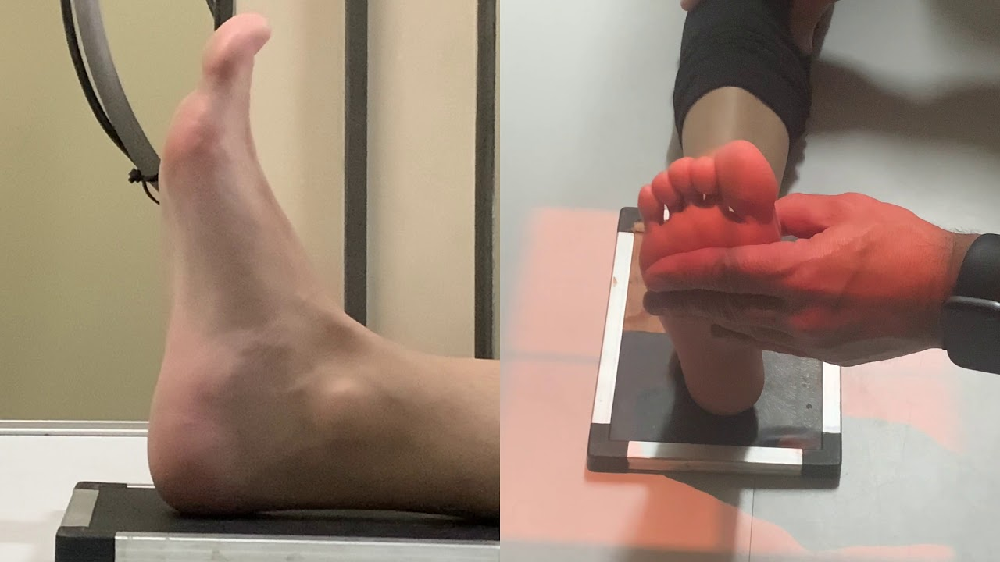
Posicionamiento PacienteCalcáneo Axial (Plantodorsal)
Calzado, calcetines, tobilleras metálicas.
Descubrir pierna distal, tobillo y pie.
18 x 24 cm (Transversal o Longitudinal). Folio fine.
100 cm.
Sin Bucky.
Angulado en 45° hacia craneal (o 40° craneal según grado de dorsiflexión).
Por el frente y por el lado hacia el hueso calcáneo, entrando por la cara plantar a nivel de la base del 3° metatarsiano.
Paciente sentado (sedestación) o en decúbito dorsal con la pierna completamente estirada, apoyando el talón en el centro del chasis. El paciente debe hiperflexionar dorsalmente el pie ayudado de una banda que sostiene con sus manos haciendo tracción para mantener la planta perpendicular a la mesa.
62 - 70 kV
6 - 10 mAs
- Mantener tracción firme de la banda sin moverse durante el disparo.
- Protección Tiroidea.
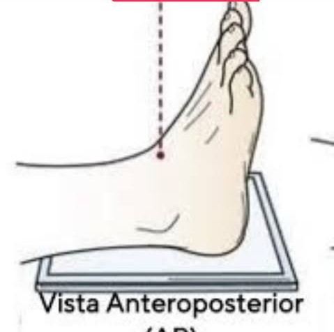
Posicionamiento PacienteTobillo AP
Calzado, calcetines, tobilleras metálicas.
Descubrir pierna distal y tobillo.
18 x 24 cm (Longitudinal) o 24 x 30 cm dividido. Folio regular (foco fino/grueso).
100 cm.
Sin Bucky.
0° (Perpendicular al RI).
RC perpendicular en el punto medio entre ambos maléolos (articulación tibioastragalina).
Paciente en decúbito dorsal o sentado sobre la mesa con la pierna estirada. Realizar una rotación medial de 5° de la pierna y el pie (eje longitudinal del pie perpendicular al receptor).
55 - 62 kV
4 - 6 mAs
- Sin moverse durante el disparo.
- Protección Tiroidea.
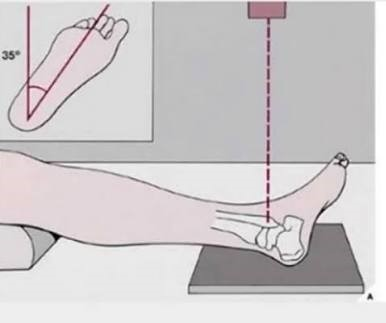
Posicionamiento PacienteTobillo Oblicuo Interno
Calzado, calcetines, tobilleras metálicas.
Descubrir pierna distal y tobillo.
18 x 24 cm (Longitudinal) o 24 x 30 cm dividido. Folio regular.
100 cm.
Sin Bucky.
0° (Perpendicular al RI).
RC perpendicular en el punto medio entre ambos maléolos.
Paciente en decúbito dorsal con la pierna estirada. Realizar una rotación medial (interna) de 15° a 20° de toda la pierna y el pie hasta que la línea intermaleolar quede paralela al chasis (despeja completamente la mortaja tibioperoneoastragalina sin superposición).
55 - 62 kV
4 - 6 mAs
- Sin moverse durante la exposición.
- Protección Tiroidea.
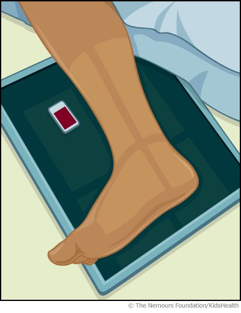
Posicionamiento PacienteTobillo Lateral (Mediolateral)
Calzado, calcetines, tobilleras metálicas.
Descubrir pierna distal y tobillo.
18 x 24 cm (Longitudinal) o 24 x 30 cm dividido. Folio regular.
100 cm.
Sin Bucky.
0° (Perpendicular al RI).
RC perpendicular sobre el maléolo medial (articulación del tobillo).
Paciente en decúbito lateral sobre el lado afectado, apoyando la cara externa del tobillo y pie sobre el chasis (dorsiflexión de 90°). La pierna contraria pasa por encima, colocando un soporte (almohadilla/cuña) bajo ella para mayor estabilidad.
55 - 62 kV
4 - 6 mAs
- Sin moverse durante el disparo.
- Protección Tiroidea.
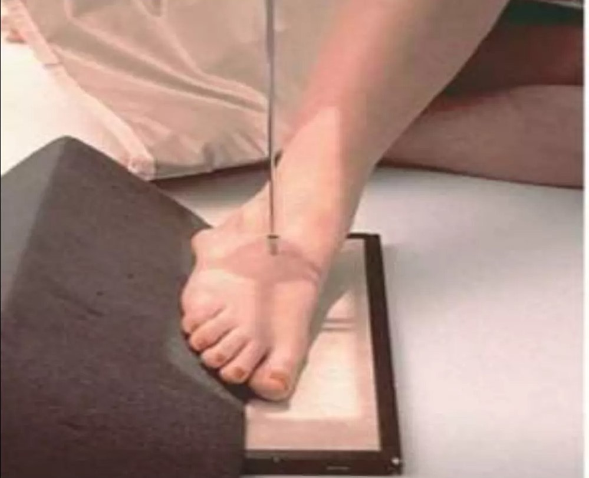
Posicionamiento PacienteTobillo Oblicuo Externo
Calzado, calcetines, tobilleras metálicas.
Descubrir pierna distal y tobillo.
18 x 24 cm (Longitudinal) o 24 x 30 cm dividido. Folio regular.
100 cm.
Sin Bucky.
0° (Perpendicular al RI).
RC perpendicular en el punto medio entre ambos maléolos.
Paciente en decúbito dorsal con la pierna estirada. Realizar una rotación lateral (externa) de 45° de toda la pierna y el pie (evalúa maléolo medial y tubérculo anterior de la tibia).
55 - 62 kV
4 - 6 mAs
- Sin moverse durante la exposición.
- Protección Tiroidea.
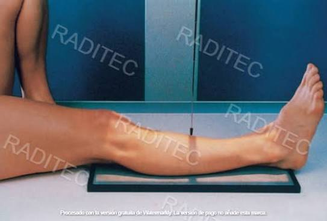
Posicionamiento PacientePierna (AP y Lateral)
Calzado, calcetines, tobilleras o férulas metálicas.
Descubrir completamente desde rodilla hasta tobillo (usar bata o short).
35 x 43 cm (Longitudinal, debe incluir ambas articulaciones: rodilla y tobillo). Folio regular (foco grueso).
100 cm.
Sin Bucky.
0° (Perpendicular al punto medio de la pierna).
En el punto medio de la diáfisis de la pierna (tibia y peroné), asegurando incluir rodilla y tobillo.
• Pierna AP: Paciente en decúbito supino sobre la mesa, pierna estirada y posicionada con rótula al cénit (pie en dorsiflexión de 90°).
• Pierna Lateral: Paciente en decúbito lateral sobre el lado afectado con flexión de pierna/rodilla en 45°. La pierna contraria pasa por encima apoyada sobre un soporte para estabilidad.
60 - 68 kV
5 - 8 mAs
- Sin moverse durante cada disparo.
- Protección Tiroidea.
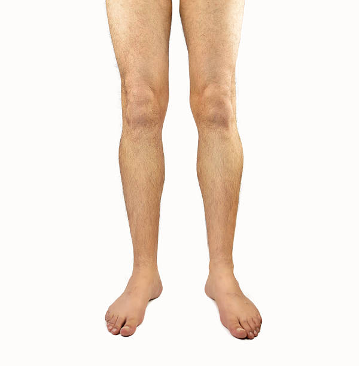
Posicionamiento PacientePierna Oblicuas (Interna y Externa)
Calzado, calcetines, objetos metálicos en la pierna.
Descubrir pierna desde rodilla hasta tobillo.
35 x 43 cm (Longitudinal). Folio regular (foco grueso).
100 cm.
Sin Bucky.
0° (Perpendicular al punto medio de la pierna).
En el punto medio de la pierna.
Paciente en decúbito supino sobre la mesa:
• Pierna Oblicua Interna: Elevación de la cadera del lado afectado y rotación interna (medial) en 45° de toda la extremidad inferior (despeja espacio interóseo tibioperoneo).
• Pierna Oblicua Externa: Elevación de la cadera contraria y rotación externa (lateral) en 45° de toda la extremidad inferior.
60 - 68 kV
5 - 8 mAs
- Sin moverse durante cada exposición.
- Protección Tiroidea.
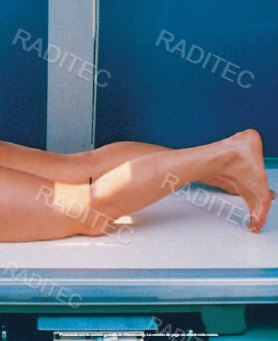
Posicionamiento PacienteRótula (PA y Lateral)
Rodilleras con varillas metálicas, cierres/botones de pantalón.
Bata de examen o short.
18 x 24 cm (Longitudinal). Folio regular (foco fino).
100 cm.
Con Bucky (Bucky mesa).
0° (Perpendicular al RI).
• Rótula PA: En el punto medio del hueco poplíteo (centro de la rótula).
• Rótula Lateral: Al centro de la articulación femoropatelar.
• Rótula PA: Paciente en decúbito prono (ventral) con la pierna en extensión apoyando la punta de los pies en la mesa; posicionar la extremidad afectada de modo que la rótula quede paralela a la placa.
• Rótula Lateral: Paciente en decúbito lateral sobre el lado afectado con flexión de pierna de solo 5° a 10° (o hasta 45° sin tracción muscular); la pierna contraria pasa por encima sobre un soporte.
65 - 72 kV (PA) / 60 - 68 kV (Lateral)
10 - 16 mAs (PA) / 8 - 12 mAs (Lateral)
- Sin moverse durante cada disparo.
- Protección Tiroidea.
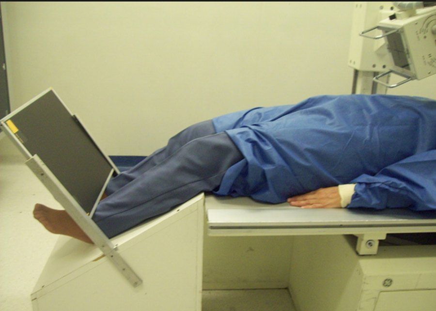
Posicionamiento PacienteAxial de Rótula (Método de Merchant / Tangencial)
Rodilleras, cierres o broches metálicos.
Bata de examen o short.
18 x 24 cm o 24 x 30 cm (Transversal). Folio fine.
100 cm.
Sin Bucky.
0° Perpendicular al chasis (tangencial al surco intercondíleo y espacio femoropatelar, con tubo angulado 30° caudal desde la horizontal en dispositivo de Merchant o tangencial inferosuperior en sedestación).
Por el frente y por el lado a nivel del vértice rotuliano / espacio articular femoropatelar.
• Método de Merchant: Paciente en decúbito supino al borde de la mesa con las rodillas flexionadas en 40° a 45° apoyadas sobre el soporte de piernas; el chasis se ubica perpendicular a las tibias distalmente.
• Variante Inferosuperior (Settegast/Hughston): Paciente sentado o en decúbito dorsal con rodilla flectada sosteniendo el chasis sobre el muslo distal.
58 - 65 kV
5 - 8 mAs
- Mantener los cuádriceps relajados y sin moverse durante el disparo (evalúa subluxación rotuliana y condromalacia).
- Protección Tiroidea.
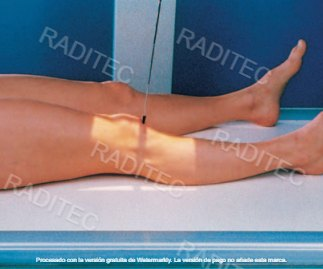
Posicionamiento PacienteRodilla AP
Rodilleras, cierres/botones de pantalón.
Bata de examen o short.
18 x 24 cm o 24 x 30 cm (Longitudinal). Folio regular.
100 cm.
Con Bucky.
0° (Perpendicular al RI; puede angularse 5° cefálico en pacientes altos o 5° caudal en pacientes bajos).
Por el frente el eje longitudinal de la rodilla; por el lado el vértice rotuliano (1,2 cm distal al ápex de la rótula).
Paciente en decúbito dorsal con la rodilla a estudiar en el centro de la mesa; desde esta posición rotar la pierna hacia interno unos 15° (o 3° a 5° medial hasta centrar la rótula) para que la rótula adquiera una posición medial central y mejorar la visión de la cabeza peroneal. Brazos a los lados del cuerpo.
65 - 72 kV
10 - 15 mAs
- Sin moverse durante la exposición.
- Protección Tiroidea.
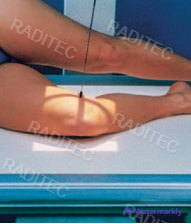
Posicionamiento PacienteRodilla Lateral (Mediolateral)
Rodilleras, cierres/botones metálicos.
Bata de examen o short.
18 x 24 cm o 24 x 30 cm (Longitudinal). Folio regular.
100 cm.
Con Bucky.
Angulado de 5° a 10° hacia craneal (compensa la mayor longitud del cóndilo femoral medial y superpone ambos cóndilos).
Por el frente el eje longitudinal de la rodilla; por el lado sobre el cóndilo femoral medial.
Paciente en decúbito lateral estricto, apoyando el borde externo de la rodilla de interés en el centro de la mesa, cóndilos superpuestos, con una semiflexión de la pierna de 20° a 30°. La pierna contraria pasa por encima, colocando un soporte bajo ella para su estabilidad.
65 - 72 kV
10 - 15 mAs
- Sin moverse durante el disparo.
- Protección Tiroidea.
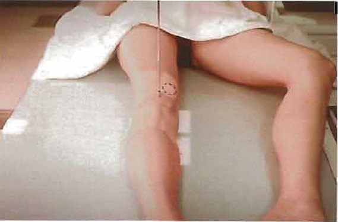
Posicionamiento PacienteRodilla Oblicuas (Externa e Interna a 45°)
Rodilleras, cierres/botones metálicos.
Bata de examen o short.
18 x 24 cm o 24 x 30 cm (Longitudinal). Folio regular.
100 cm.
Con Bucky.
0° (Perpendicular al RI).
Por el frente el eje longitudinal de la rodilla; por el lado el vértice rotuliano.
Paciente en decúbito dorsal con la rodilla extendida; desde esta posición realizar una rotación de 45° a externo (despeja cóndilo medial y platillo tibial medial) y luego una rotación de 45° a interno (despeja articulación tibioperonea proximal, cabeza del peroné y cóndilo lateral), cuidando la simetría de la estructura.
65 - 72 kV
10 - 15 mAs
- Sin moverse durante cada exposición.
- Protección Tiroidea.
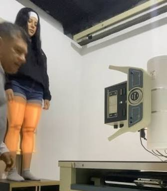
Posicionamiento PacienteRodilla AP con Carga (Bipodal / Monopodal - Ejes Valgo y Varo)
Rodilleras, cierres/botones metálicos.
Bata de examen o short (pantalones remangados).
30 x 40 cm o 35 x 43 cm (Transversal para estudio bilateral comparativo). Folio regular.
100 cm.
Sí (Estativo mural).
0° Horizontal perpendicular al estativo mural.
En el punto medio entre ambas rodillas a nivel de los vértices rotulianos / interlínea articular femorotibial.
Paciente en bipedestación de espaldas al estativo mural, rodillas extendidas y rótulas centradas al frente, con apoyo bipodal (peso distribuido en ambos pies) o apoyo monopodal según orden médica.
68 - 75 kV
12 - 18 mAs
- Mantenerse firme sin moverse durante el disparo (evalúa pinzamiento del espacio articular femorotibial, dismetría de EEII y desviaciones de eje en Genu Valgo o Genu Varo).
- Protección Tiroidea.
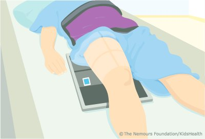
Posicionamiento PacienteFémur AP
Cinturón, monedas, llaves, cierres/botones de pantalón.
Retirar pantalón y ropa con broches metálicos (usar bata de examen).
35 x 43 cm (Longitudinal; en adultos se toma en dos placas: proximal y distal). Folio regular.
100 cm.
Con Bucky (Bucky mesa).
0° (Perpendicular al eje longitudinal del fémur).
Por el frente el eje longitudinal del fémur:
• Fémur Proximal: La articulación coxofemoral debe quedar a dos traveses de dedo bajo el borde superior del chasis.
• Fémur Distal: La articulación femorotibial debe quedar a dos traveses de dedo sobre el borde inferior del chasis.
Paciente en decúbito dorsal con el muslo centrado en la línea media de la mesa, pierna a estudiar con una rotación a medial de 15° (para colocar cuello femoral paralelo al RI en proximal y epicóndilos paralelos en distal), brazos a los lados del cuerpo.
75 - 82 kV (Proximal) / 70 - 78 kV (Distal)
20 - 30 mAs (Proximal) / 15 - 22 mAs (Distal)
- Sin moverse durante cada disparo.
- Protección Tiroidea.
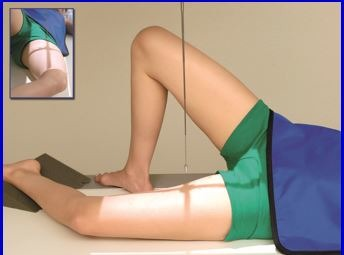
Posicionamiento PacienteFémur Lateral Proximal
Cinturón, monedas, llaves, cierres/botones metálicos.
Bata de examen.
35 x 43 cm (Longitudinal). Folio regular.
100 cm.
Con Bucky.
0° (Perpendicular al RI).
Por el frente el eje longitudinal del fémur; por el lado la articulación coxofemoral (ingle) debe quedar a dos traveses de dedo bajo el borde superior del chasis.
Paciente en decúbito lateral, apoyando el borde externo del muslo en el centro de la mesa; desde esta posición el cuerpo del paciente se oblicua en 45° hacia atrás (abduciendo/flexionando el muslo sano hacia posterior para evitar superposición con el tercio proximal del fémur afectado). Usar almohada para apoyar la cabeza y brazos acomodados en torno a ella.
75 - 85 kV
22 - 35 mAs
- Sin moverse durante el disparo.
- Protección Tiroidea.
Fémur Lateral Distal
Cierres, broches o rodilleras metálicas.
Bata de examen.
35 x 43 cm (Longitudinal). Folio regular.
100 cm.
Con Bucky.
0° (Perpendicular al RI).
Por el frente el eje longitudinal del fémur; por el lado la articulación femorotibial debe quedar a dos traveses de dedo por sobre el borde inferior del chasis.
Paciente en decúbito lateral, apoyando el borde externo del muslo en el centro de la mesa; pierna contraria estirada levemente hacia atrás (o pasada por delante), colocando un soporte (almohadillas) bajo la rodilla que la deje estable y a nivel que permita mantener la lateralidad estricta del cuerpo.
70 - 78 kV
15 - 22 mAs
- Sin moverse durante el disparo.
- Protección Tiroidea.